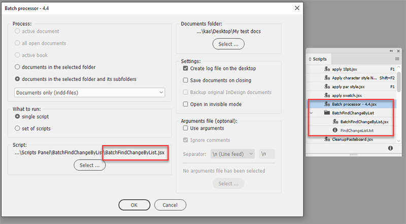
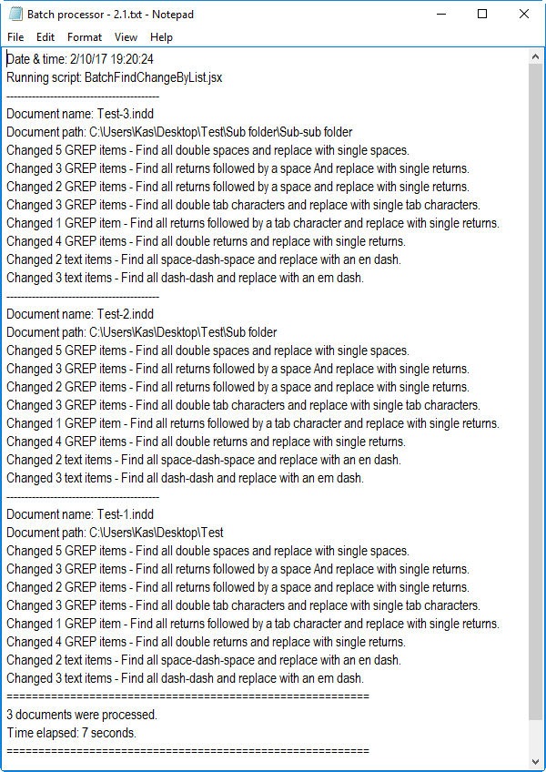

Batch Find-Change by list script for batch processor
This script works in the same way as the pre-installed FindChangeByList.jsx script. (You can find it in the "InDesign app > Scripts > Scripts Pane> Samples > JavaScript" folder). But you can use it with the Batch processor to process, say, 1,000 documents located in a folder and it's subfolders.
You should run this script from the batch processor only: it can't be used as a regular script.

The script looks for the FindChangeList.txt file in the following locations (in the following order):
- In the same folder as the BatchFindChangeByList.jsx file is located
- In the FindChangeSupport folder which is located in the same folder as the BatchFindChangeByList.jsx
- In the default location where the 'samples' scripts are installed: "InDesign app > Scripts > Scripts Panel > Samples > JavaScript > FindChangeSupport > FindChangeList.txt"
Once the file is found, the script uses it: in other words, it uses the 'nearest' FindChangeList.txt file. You can copy it from the default location to the folder where the script is located and edit it, keeping the original intact.
If you don't know how to edit the FindChangeList.txt file, I recommend you to use Record Find Change script written by Martin Fisher. It writes the current find/change preferences to a text file so that you can copy and /paste them into a find-change list file.
The script sends information about the changes made to the log file on the desktop like so:

If you want to have this information in the log, make sure to add comments after the forth tab in the find-change list, otherwise you'll get only total number of changes made, like "Changed 5 GREP items".
Here I prepared a sample document for testing. I used only the find-change queries which come with the default FindChangeList.txt
Click here to download the script.
See also FindChangeByList script with result dialog box
Back to the Scripts for batch processor page